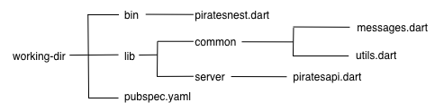
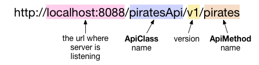
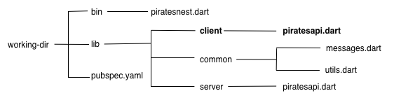
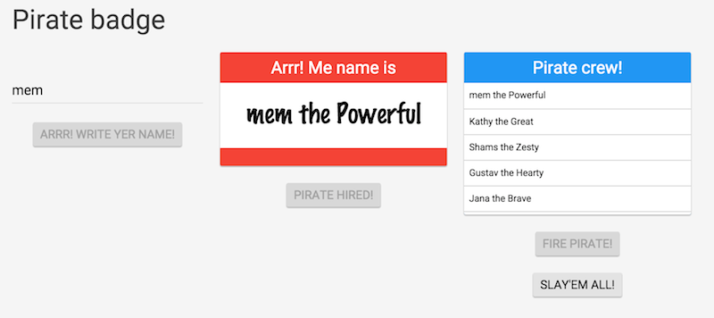
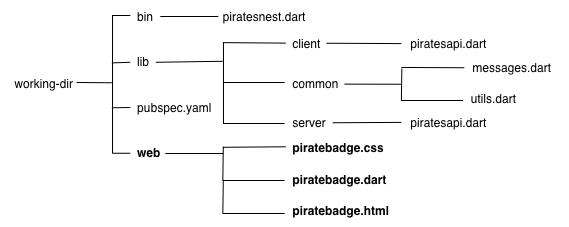

Learn how to create a RESTful web server using the Dart language and libraries, featuring the RPC package. In this code lab, you create a server with API methods exposed as GET, POST, and DELETE requests. Once the server’s API is complete, you use it to generate the corresponding API for a Dart client app. Finally, you extend the server using the HTTP server library to serve the Dart client directly.
This code lab assumes that you are comfortable reading Dart code. If you’d like a more thorough introduction to the Dart language, see the client code lab or the language tour.
This app lets you store a list of pirates to a Dart server. Try it!
In this step, you download Dart and get the sample code.
If you haven’t already done so,
download the Dart SDK.
Unzip the archive, which creates a directory called dart-sdk.
The Dart SDK download includes several Dart
tools that you’ll need, incuding dart, pub, and dartanalyzer.
If dart is not recognized at the command line,
add <path-to-the-SDK>/dart-sdk/bin to your path.
You need a way to test the client app. You have two options. You can:
If you prefer the latter option, and you don’t have Dartium already, download Dartium. Note that the executable is called Chromium on your file system.
Download the sample code from the one-hour-codelab GitHub repo using one of the following options:
Download the zip file,
one-hour-codelab-master.zip.
Unzip the ZIP file, which creates a directory called
one-hour-codelab-master.
Clone the repo. For example, from the command line:
git clone https://github.com/dart-lang/one-hour-codelab.git
This creates a directory named one-hour-codelab.
The server directory contains the following files and directories:
1-starter2-simple3-*4-extended5-generated6-client7-serveworking-dir1-starter
You need a way to test the server. You can do some of the testing in a browser, but Step 4 requires a tool, such as curl, that lets you construct POST and DELETE requests.
curl is a tool used for transferring data to or from a server using a supported protocol, such as HTTP, FTP, or IMAP. (Other tools, such as wget, perform the same function, but this code lab uses curl.) curl is already installed on most Macs and many Linux distributions.
If you don’t have curl, go to the curl download page, scroll down until you find the right version for your OS, and then download and install it. On Linux, you might be able to get curl by running:
apt-get install curl
In this step, you open the source files for the server and familiarize yourself with the code. Note that this version of the server doesn’t run. You’ll fix the code in Step 2.
Note:
Throughout this code lab, edit the files in working-dir.
You can use the files in the numbered directories to compare to your code
or to recover if you get off track.
Initially, the working-dir files and directories are identical to
those in 1-starter:

messages.dartpiratesapi.dartpiratesnest.dart main() function, which implements the main server entrypoint.utils.dartGet familiar with the server code.
library pirate.server;
import 'package:rpc/api.dart';
import '../common/messages.dart';
import '../common/utils.dart';
// This class defines the interface that the server provides.
class PiratesApi {
final Map<String, Pirate> _pirateCrew = {};
final PirateShanghaier _shanghaier =
new PirateShanghaier();
PiratesApi() {
var captain = new Pirate.fromString('Lars the Captain');
_pirateCrew[captain.toString()] = captain;
}
// Returns a list of the pirate crew.
List<Pirate> listPirates() {
return _pirateCrew.values.toList();
}
// Generates (shanghais) and returns a new pirate.
// Does not add the new pirate to the crew.
Pirate shanghaiAPirate() {
var pirate = _shanghaier.shanghaiAPirate();
if (pirate == null) {
throw new InternalServerError('Ran out of pirates!');
}
return pirate;
}
}
Key information
The server maintains a list (stored as a Map) of pirates, _pirateCrew,
which constitutes the “nest of pirates.” This list initially contains
only “Lars the Captain”.
The server creates _shanghaier, an instance of PirateShanghaier,
which handles the generation of pirate names.
Generating a pirate name is referred to as “shanghaiing a pirate”.
The PiratesApi class defines two methods:
listPirates() returns the _pirateCrew as a list;
shanghaiAPirate() returns a new Pirate object with a valid pirate name
(example: Anne the Brave).
library piratesnest; import 'dart:io'; import 'package:logging/logging.dart'; import 'package:rpc/rpc.dart'; import 'package:server_code_lab/server/piratesapi.dart';final ApiServer _apiServer = new ApiServer(prettyPrint: true);main()async { // Add a bit of logging...Logger.root..level = Level.INFO..onRecord.listen(print);// Set up a server serving the pirate API._apiServer.addApi(new PiratesApi());HttpServer server =await HttpServer.bind(InternetAddress.ANY_IP_V4, 8088);server.listen(_apiServer.httpRequestHandler);print('Server listening on http://${server.address.host}:''${server.port}');}
Key information
The RPC package requires you to create an ApiServer instance for
routing the HTTP requests to your methods.
This file contains the entrypoint for the server—the main()
function. Running this file starts up the server.
After creating an instance of HttpServer and binding it to port 8088, the server listens to that port using the API specified in the PiratesApi class.
The logging code generates print statements for each message that the server handles.
library pirate.utils; import 'dart:math' show Random; import 'messages.dart'; // Proper pirate names. const List<String>pirateNames= const [ "Anne", "Bette", "Cate", "Dawn", "Elise", "Faye", "Ginger", "Harriot", "Izzy", "Jane", "Kaye", "Liz", "Maria", "Nell", "Olive", "Pat", "Queenie", "Rae", "Sal", "Tam", "Uma", "Violet", "Wilma", "Xana", "Yvonne", "Zelda", "Abe", "Billy", "Caleb", "Davie", "Eb", "Frank", "Gabe", "House", "Icarus", "Jack", "Kurt", "Larry", "Mike", "Nolan", "Oliver", "Pat", "Quib", "Roy", "Sal", "Tom", "Ube", "Val", "Walt", "Xavier", "Yvan", "Zeb" ]; // Proper pirate appellations. const List<String>pirateAppellations= const [ "Awesome", "Captain", "Even", "Fighter", "Great", "Hearty", "Jackal", "King", "Lord", "Mighty", "Noble", "Old", "Powerful", "Quick", "Red", "Stalwart", "Tank", "Ultimate", "Vicious", "Wily", "aXe", "Young", "Brave", "Eager", "Kind", "Sandy", "Xeric", "Yellow", "Zesty" ]; // Clearly invalid pirate appellations. const List<String>_forbiddenAppellations= const [ '', 'sweet', 'handsome', 'beautiful', 'weak', 'wuss', 'chicken', 'fearful' ]; // Helper method for validating whether the given pirate is truly a pirate! booltruePirate(Pirate pirate)=> pirate.name != null && pirate.name.trim().isNotEmpty && pirate.appellation != null && !_forbiddenAppellations .contains(pirate.appellation.toLowerCase()); // Shared class for shanghaiing (generating) pirates. class PirateShanghaier { static final Random indexGen = new Random(); PirateshanghaiAPirate({String name, String appellation}){ var pirate = new Pirate(); pirate.name = name != null ? name : pirateNames[indexGen.nextInt(pirateNames.length)]; pirate.appellation = appellation != null ? appellation : pirateAppellations[ indexGen.nextInt(pirateAppellations.length)]; return truePirate(pirate) ? pirate : null; } }
Key information
Servers and other command-line apps generally rely on the dart:io library.
Client apps generally rely on the dart:html library.
utils.dart doesn’t rely on dart:io or dart:html and can be used by both
the server and the client, so it lives in lib/common/.
The pirateNames list contains first names (like “Anne” and “Mike”);
pirateAppellations contains labels (like “Old” and “Mighty”).
These are used to generate valid pirate names (“Anne the Mighty”).
Thanks to the truePirate() function, the server rejects any pirate name
that uses one of the _forbiddenAppellations;
for example “Markus the Wuss” is not allowed.
library pirate.messages; // This class is used to send data back and forth between the // client and server. It is automatically serialized and // deserialized by the RPC package.class Pirate{ String name; String appellation; // A message class must have a default constructor taking no // arguments.Pirate(); // It is fine to have other named constructors.Pirate.fromString(String pirateName){ var parts = pirateName.split(' the '); name = parts[0]; appellation = parts[1]; } String toString() => name.isEmpty ? '' : '$name the $appellation'; }
Key information
messages.dart specifies the message format used between client and server.
Both apps share the code, which is possible because it does not rely
on dart:io or dart:html.
Besides defining properties, the Pirate class can convert Pirate objects to and from their string components.
In this step, you add annotations to the server’s API so the RPC library understands which methods are to be exposed as remotely available.
The pub package manager makes sure that you have all the packages that the app needs.
pub get
Add an @ApiClass annotation to the PiratesApi class.
Add @ApiMethod annotations to the listPirates() and
shanghaiAPirate() methods.
library pirate.server; import 'package:rpc/api.dart'; import '../common/messages.dart'; import '../common/utils.dart'; // This class defines the interface that the server provides.@ApiClass(version: 'v1')class PiratesApi { final Map<String, Pirate> _pirateCrew = {}; final PirateShanghaier _shanghaier = new PirateShanghaier(); PiratesApi() { var captain = new Pirate.fromString('Lars the Captain'); _pirateCrew[captain.toString()] = captain; } // Returns a list of the pirate crew.@ApiMethod(path: 'pirates')List<Pirate> listPirates() { return _pirateCrew.values.toList(); } // Generates (shanghais) and returns a new pirate. // Does not add the new pirate to the crew.@ApiMethod(path: 'shanghai')Pirate shanghaiAPirate() { var pirate = _shanghaier.shanghaiAPirate(); if (pirate == null) { throw new InternalServerError('Ran out of pirates!'); } return pirate; } }
Key information
The RPC package allows you to create RESTful server-side Dart APIs.
Identify the top-level API class with the ApiClass annotation
to expose this class as a public API. A version number is required.
Identify remotely accessible methods with the ApiMethod annotation.
Unless otherwise specified with the optional method parameter,
all methods are assumed to send GET requests.
The required path parameter in the ApiMethod annotation specifies
how to invoke the method via an HTTP request, as you will see in
Step 3.
In this step, you start up the server and make an HTTP request to verify that it’s running.
Use dartanalyzer to check the code for errors
(unless you’re using a tool, such as Dart Editor or WebStorm
that automatically analyzes code).
To run dartanalyzer from the command line,
do the following from the working-dir directory:
dartanalyzer lib/server/piratesapi.dart
You should see No issues found. If the code has problems, you
can fix it or use the code from 2-simple.
Use the dart command to launch the server:
dart bin/piratesnest.dart
You should see the following output:
[INFO] rpc: Adding /piratesApi/v1 to set of valid APIs. Server listening on http://0.0.0.0:8088
Key information
The INFO message is displayed by the logging code.
When you start up the server, you might see a dialog asking, ‘Do you want the application “dart” to accept incoming network connections?’ This dialog, from the computer’s firewall, is asking if you want to be able to connect to the Dart server from a different computer. Since you are using localhost, you can “Deny” the request and it will still work.
If you are running the server from an IDE, you might also see:
Observatory listening on http://127.0.0.1:53264
Observatory is Dart’s profiling tool—you can ignore this message.
You can test the server in a browser, or by using the curl utility.
To make an HTTP request to the server, first construct a URL. For example:

The server listens on localhost:8088, as specified in the
main() method. The class name, version,
and method name are specified in the ApiClass.
You can test the server either in a browser, or by using curl.
For example, to request the list of pirates from the server, do one of the following:
Navigate to http://localhost:8088/piratesApi/v1/pirates in a browser.
Type the following at the command line:
curl http://localhost:8088/piratesApi/v1/pirates
Initially, the crew contains only the captain:
[
{
"name": "Lars",
"appellation": "Captain"
}
]
The window running the server displays logging messages for this GET command.
Key information
Don’t be alarmed if you see the following warning when messaging the server from the browser:
[WARNING] rpc: Response Status Code: 400 ... RPC Error with status: 400 and message: Invalid request, missing API name and/or version: http://localhost:8088/favicon.ico.
In this step, you extend the server API to support POST and DELETE requests so that you can store and delete pirate names in the list of pirates.
To support adding a pirate,
add a hirePirate() method to the PiratesApi class.
// This class defines the interface that the server provides.
@ApiClass(version: 'v1')
class PiratesApi {
...
@ApiMethod(method: 'POST', path: 'pirate')
Pirate hirePirate(Pirate newPirate) {
// Make sure this is a real pirate...
if (!truePirate(newPirate)) {
throw new BadRequestError(
'$newPirate cannot be a pirate. \'Tis not a pirate name!');
}
var pirateName = newPirate.toString();
if (_pirateCrew.containsKey(pirateName)) {
throw new BadRequestError(
'$newPirate is already part of your crew!');
}
// Add the pirate to the crew.
_pirateCrew[pirateName] = newPirate;
return newPirate;
}
...
}
Key Information
Annotating the method with ApiMethod exposes it as available remotely.
The optional method parameter identifies the request type:
hirePirate is a POST request.
The required path parameter specifies how to access this method
from an HTTP request.
For POST requests, the RPC package requires that the method take a message
class as a parameter. A message class must have a public constructor and
public fields. Our message class, Pirate, is defined in messages.dart.
If the pirate is successfully added to the crew, the server returns the Pirate object as a response message.
The POST request’s body (which is in JSON) is automatically deserialized into a Pirate object, and the returned Pirate object is automatically serialized into the response body as JSON.
To support deleting a pirate,
add a firePirate() method to the PiratesApi class.
// This class defines the interface that the server provides.
@ApiClass(version: 'v1')
class PiratesApi {
...
@ApiMethod(
method: 'DELETE', path: 'pirate/{name}/the/{appellation}')
Pirate firePirate(String name, String appellation) {
var pirate = new Pirate()
..name = Uri.decodeComponent(name)
..appellation = Uri.decodeComponent(appellation);
var pirateName = pirate.toString();
if (!_pirateCrew.containsKey(pirateName)) {
throw new NotFoundError('Could not find pirate \'$pirate\'!' +
'Maybe they\'ve abandoned ship!');
}
return _pirateCrew.remove(pirateName);
}
...
}
Key Information
Annotating the method with ApiMethod exposes it as available remotely.
The optional method parameter identifies firePirate as a DELETE request.
The required path parameter, set here to ‘pirate/{name}/the/{appellation}’,
specifies how to access this method from an HTTP request.
name and appellation are path parameters that are parsed by the
RPC package and passed to the method as String values.
Run dartanalyzer on piratesapi.dart. From the top of working-dir:
dartanalyzer lib/server/piratesapi.dart
If the analyzer finds issues, you can debug them, or you can
use the code in 4-extended.
Restart the server.
dart bin/piratesnest.dart
Verify the new API for adding and deleting pirates. This step requires curl.
Constructing a curl command for a POST or DELETE request is
a little different than for a GET request.
If you recall, we annotated the hirePirate method like this:
@ApiMethod(method: 'POST', path: 'pirate')
To access the hirePirate method, use pirate as the last bit of the URL.
You can pass data in curl using the -d parameter, so the following command
adds “Shams the Destroyer” to the list of pirates:
On Mac and Linux:
curl -d '{"name":"Shams", "appellation":"Destroyer"}' http://localhost:8088/piratesApi/v1/pirate
On Windows:
curl -d "{\"name\":\"Shams\",\"appellation\":\"Destroyer\"}" http://localhost:8088/piratesApi/v1/pirate
The firePirate method was annotated like this:
@ApiMethod(method: 'DELETE', path: 'pirate/{name}/the/{appellation}')
The following command deletes “Shams the Destroyer”:
curl -X DELETE http://localhost:8088/piratesApi/v1/pirate/Shams/the/Destroyer
Play with the server by adding and deleting pirates. You might try the following:
utils.dart),
such as “Brad the Beautiful” or “Horatio the Wuss”.Key information
The DELETE request (firePirate) demonstrates how to specify parameters
directly in the HTTP request. The POST request (hirePirate) demonstrates
how to use a message class for passing values.
Either approach is valid depending on your needs:
Only path and query parameters can be specified in the URL directly.
The message class enables using more advanced data structures.
In the previous step, you added POST and DELETE methods to the
PiratesApi class.
In this step, you use the generator from the RPC package to
create a PiratesApi class that can be used by a client app.
After you have completed this step, a new lib/client/
directory contains the generated API.

From within the working-dir directory run the following commands:
pub global activate rpc pub global run rpc:generate client -i lib/server/piratesapi.dart -o lib/client
You should see the following output:
[SUCCESS] piratesapi v1 @ lib/client
Key information
The RPC generator creates a lib/client/name.dart file,
where name is based on the name of the server API class. For example,
if PiratesApi were defined in a file named lib/server/ahoy.dart,
the client filename would still be lib/client/piratesapi.dart.
This file allows you to connect your client app to the server, as you will see in Step 6.
If you are using Dart Editor, you can update the file listing by right-clicking the package name and choosing Refresh from the menu that pops up.
You can view the full listing of the generated file in the
lib/client/ directory, but let’s look an overview of the code:
library server_code_lab.piratesApi.client; ...class PiratesApi{ final commons.ApiRequester _requester;PiratesApi(http.Client client, {core.String rootUrl: "http://localhost:8080/", core.String servicePath: "piratesApi/v1/"}) :... async.Future<Pirate>firePirate(core.String name,core.String appellation){ ... } async.Future<Pirate>hirePirate(Pirate request){ ... } async.Future<core.List<Pirate>>listPirates(){ ... } async.Future<Pirate>shanghaiAPirate(){ ... } } class PirateFactory { static Pirate fromJson(core.Map _json) { ... } static core.Map toJson(Pirate message) { ... } }
Key information
For each method marked with ApiMethod in server/piratesapi.dart,
the RPC generator creates a corresponding method in client/piratesapi.dart.
The RPC generator assumes that the server is messaging on
http://localhost:8080/. Our server uses port 8088,
so the client app must override the default URL when instantiating
this class, as you will see in the next step.
These generated methods return Futures, indicating that they return before their work is complete. In the next step you’ll see how to write code that uses these asynchronous methods.
This step shows how to call the server from a Dart client using the generated client API.
To save time, we’ve modified the Pirate example from the client code lab with additional UI for creating and maintaining a nest of pirates. We’ve also updated the UI to use material design, as shown in the following screen shot:

Copy the web directory from 6-client to your package.
After you have copied the web directory to your working directory,
the package should look like this:

The bolded files implement the client app, PirateBadge.
piratebadge.csspiratebadge.dartpiratebadge.htmlKey information
You can view the full listing of the client code in the
web/ directory, but let’s look at an overview of piratebadge.dart:
... import 'package:http/browser_client.dart'; import 'package:server_code_lab/client/piratesapi.dart'; import 'package:server_code_lab/common/messages.dart'; import 'package:server_code_lab/common/utils.dart'; ... // By default the generated client code uses // 'http://localhost:8080/'. Since our server is running on // port 8088 we override the default url when instantiating // the generated PiratesApi class.final String _serverUrl = 'localhost:8088/';final BrowserClient _client = new BrowserClient();PiratesApi _api;PirateShanghaier _shanghaier;Future main() async { // We need to determine if the client is using http or https // and use the same protocol for the client stub requests // (the protocol includes the ':'). var protocol = window.location.protocol;_api = new PiratesApi(_client, rootUrl: '$protocol//$_serverUrl');_shanghaier = new PirateShanghaier(); ... } Future refreshList() async {List<Pirate> pirates = await _api.listPirates();... } void updateBadge(Event e) { String inputName = (e.target as InputElement).value.trim();var pirate = _shanghaier.shanghaiAPirate(name: inputName);... } Future storeBadge(Event e) async { var pirateName = badgeNameElement.text; if (pirateName == null || pirateName.isEmpty) return null; var pirate = new Pirate.fromString(pirateName); try {await _api.hirePirate(pirate);} catch (error) { ... } ... } ... Future removeBadge(Event e) async { ... var option = pirateList.options.elementAt(idx); var pirate = new Pirate.fromString(option.label); try {await _api.firePirate(pirate.name, pirate.appellation);} catch (error) { ... } ... } Future removeAllBadges(Event e) async { for (var option in pirateList.options) { var pirate = new Pirate.fromString(option.label); try {await _api.firePirate(pirate.name, pirate.appellation);} catch (error) { // ignoring errors. } } ... } void generateBadge(Event e) { var pirate = _shanghaier.shanghaiAPirate(); setBadgeName(pirate); } ... voidaddRippleEffect(MouseEvent e){ ... }
Key information
The generated server API assumes that the server uses localhost:8080,
but our server is actually serving on port 8088, so the client has to set
it explicitly.
The client creates _api, an instance of the client-side PiratesApi class.
The client calls the server through the _api instance, using
the API generated in Step 5.
For example, the client fetches the current pirate crew asynchronously by
calling _api.listPirates().
The client’s UI uses
material design.
The material design visuals are mostly implemented in piratebadge.css.
When clicked,
a material design button animates—a wave ripples outward from the
point of contact. The addRippleEffect method,
implemented in Dart code, provides this effect.
Before launching the client, run pub get and launch the server.
pub get dart bin/piratesnest.dart
You have a few options for launching the client.
Launch the client using Dartium.
Start up Dartium (remember that it’s called Chromium on your file system).
Use File > Open File… and select piratebadge.html from the web
directory of your package.
Launch the client using your IDE.
Right-click web/piratebadge.html and choose the Run in Dartium option
(or equivalent) from the menu.
Run pub build and launch the generated version in any browser.
The following opens the app in your default browser on a Mac.
pub build open build/web/piratebadge.html
Key information
Running pub build prints the following:
“WARNING: dart:mirrors support in dart2js is experimental, and not recommended. This implementation of mirrors is incomplete, and often greatly increases the size of the generated JavaScript code.”
You can ignore this warning. The HTTP library uses mirrors to instantiate platform-specific classes on the VM and, in this case, does not cause code bloat.
When running the client app, you might see these logging statements:
Refused to set unsafe header “user-agent”
Refused to set unsafe header “content-length”
These messages are caused by the generated code trying to set these header fields. You can ignore these messages.
If Dartium’s status indicator spins indefinitely, don’t worry. The PirateBadge app might well be loaded and running.
In this step, you modify the server so that it serves the client in the browser—you no longer have to explicitly launch the client app.
Add the http_server dependency to the pubspec.yaml file, which
is directly under working-dir.
name: server_code_lab
version: 0.1.0
author: Dart Team <misc@dartlang.org>
description: Code-lab server sample.
environment:
sdk: '>=1.9.0 <2.0.0'
dependencies:
_discoveryapis_commons: ^0.1.0
browser: ^0.10.0+2
crypto: ^0.9.0
http: ^0.11.1
http_server: ^0.9.5+1
logging_handlers: ^0.8.0
rpc: ^0.3.0
Update the dependencies:
pub get
Import the dart:async and http_server packages.
import 'dart:async';import 'dart:io';import 'package:http_server/http_server.dart';import 'package:logging/logging.dart'; import 'package:rpc/rpc.dart';
Key information
http_server package is used to serve the client app.Add the following code to create a virtual directory for serving the
client from the build/web directory.
final ApiServer _apiServer = new ApiServer(prettyPrint: true);final String _buildPath =Platform.script.resolve('../build/web/').toFilePath();final VirtualDirectory _clientDir =new VirtualDirectory(_buildPath);
Add a request handler that examines the request and vectors it to the right place.
Future requestHandler(HttpRequest request) async {if (request.uri.path.startsWith('/piratesApi')) {// Handle the API request.var apiResponse;try {var apiRequest = new HttpApiRequest.fromHttpRequest(request);apiResponse =await _apiServer.handleHttpApiRequest(apiRequest);} catch (error, stack) {var exception =error is Error ? new Exception(error.toString()) : error;apiResponse = new HttpApiResponse.error(HttpStatus.INTERNAL_SERVER_ERROR, exception.toString(),exception, stack);}return sendApiResponse(apiResponse, request.response);} else if (request.uri.path == '/') {// Redirect to the piratebadge.html file. This will initiate// loading the client application.request.response.redirect(Uri.parse('/piratebadge.html'));} else {// Serve the requested file (path) from the virtual directory,// minus the preceeding '/'. This will fail with a 404 Not Found// if the request is not for a valid file.var fileUri = new Uri.file(_buildPath).resolve(request.uri.path.substring(1));_clientDir.serveFile(new File(fileUri.toFilePath()), request);}}
If the incoming request begins with the /piratesApi string
(for example, if it’s a curl command) vector that request to ApiServer.
If the incoming request doesn’t specify any file,
serve /piratebadge.html (the default); this loads the client app.
Otherwise, serve the requested file. Specifying an invalid file results in a 404 error.
Instruct the server to listen on the requestHandler method.
main() async {
// Add a bit of logging...
Logger.root..level = Level.INFO
..onRecord.listen(print);
// Set up a server serving the pirate API.
_apiServer.addApi(new PiratesApi());
HttpServer server =
await HttpServer.bind(InternetAddress.ANY_IP_V4, 8088);
server.listen(requestHandler);
print('Server listening on http://${server.address.host}:'
'${server.port}');
}
Update the dependencies.
pub get
Run the analyzer on the code, if your IDE or editor didn’t already do so.
dartanalyzer bin/piratesnest.dart
Build the client app.
pub build
Kill any previous instances of the server and relaunch.
dart bin/piratesnest.dart
In your browser, navigate to http://localhost:8088/piratebadge.html.
Play with the server by creating a pirate crew.
Now that you’ve played with a Dart server, what is next? Here are some suggestions.
Step 8 of the appengine-auth branch of the one-hour-codelab repo modifies the server so that you can deploy it to AppEngine.
Step 9 of the appengine-auth branch of the one-hour-codelab repo modifies the server to require a Google Account login.
The RPC package allows you to expose your API in the Discovery document format. This means that clients can download the API description in JSON and generate client stubs to call the server API using a Discover document generator, such as the Discovery API generator for Dart.
You can read more at Google APIs Discovery Service.
Learn more about Dart from The Dart Tutorials. In particular, the Write HTTP Clients & Servers tutorial has more information on server-side programming.
This code lab introduced you to the RPC package, a powerful tool for creating a RESTful server API without writing a lot of boilerplate code.
You learned:
How to specify a server’s API, using the RPC package.
How to create the corresponding client API using the RPC generator.
How to create libraries that a client and server can share, by writing code that depends on neither dart:io nor dart:html.
How to use the API generated by the RPC package.
How to modify the server to serve the client directly.
Please provide feedback to the appropriate repo: